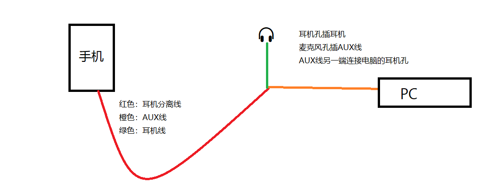

前几个月看到一个视频，K 歌内放纯人声可以得高分。
感觉挺有意思的，我也去玩了玩。
前提是你要卡好时间（如果你会写程序你还可以开发一个 K 歌卡点软件），纯人声的音频质量差和没卡好点都会影响分数。
- 寻找纯人声音频：纯人声可以在网上找，也可以使用伴奏人声分离软件分离出来。
- 卡点：按照上面的视频卡点即可（这个最难了）。
下面是内放教程
# 1. 模拟器内放
部分 K 歌软件可能不兼容模拟器
- 下载安卓模拟器（自己喜欢用什么模拟器就用什么模拟器）
- 在模拟器上下载 K 歌软件
- 右键
喇叭图标点击声音再点击录制右键立体声混音点击启用 - 在模拟器设置默认麦克风设备为立体声混音
- 将模拟器声音关闭
# 2. 将电脑（或其他设备）声音内放到手机
准备 AUX 线、耳机、耳麦分离线
耳麦分离线插手机麦克风孔，耳麦分离线的耳机孔插耳机，麦克风孔插 AUX 线，AUX 线另一头连接电脑的耳机孔。连接好后就可以测试一下有没有内放效果了。

# 我遇到的问题
当时我遇到了一个问题，就是连接好后 使用的麦克风仍然是手机内置的麦克风 。于是我就先接好电脑和耳机，最后再把耳麦分离线插手机耳机孔就好了。某一天又发现了这个问题并且按照刚刚的操作也不行，我就重启了一下电脑再接手机就好了。于是我每次遇到这个问题都重启电脑。
我还遇到了接好后 会把手机音量调大 问题，估计是触发了耳机控制，没有解决方法。